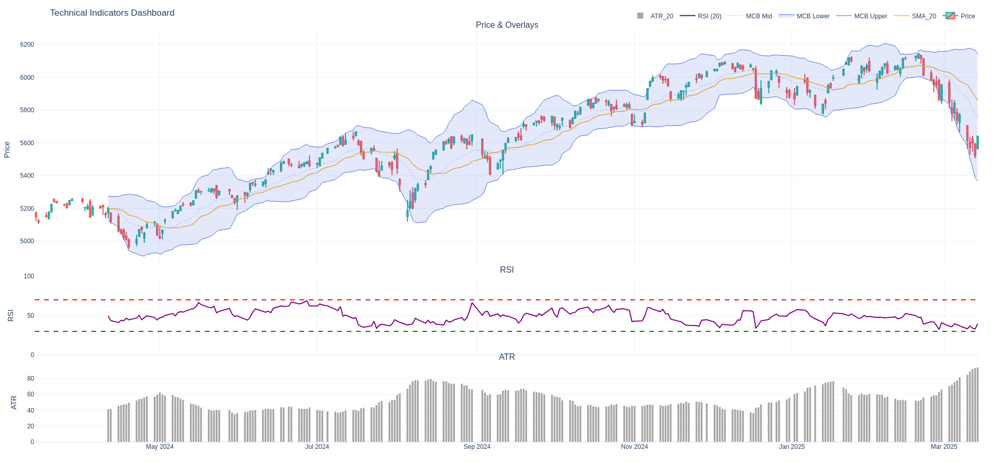

Tutorial 2: Visualizing Indicators with Plotly
Build on Tutorial 1 by adding rich, interactive technical charts.
This tutorial is the second in the series:
- 01 - Using Centaur Technical Indicators with pandas
- 02 - Using Centaur Technical Indicators with Plotly
- 03 - More advanced use cases for Centaur Technical Indicators
- 04 - Connecting to an API
🎯 Goal
Add interactive Plotly charts on top of the engineered indicators from Tutorial 1:
- Candlestick chart from CSV OHLCV data
- Overlay moving average (SMA)
- Overlay Moving Constant Bands
- Add RSI in its own panel (with threshold lines)
- Add ATR in a third panel
- Optional: interactive toggling of indicators
- Optional: static export
📦 Prerequisites
You should already have:
- A
prices.csvfile (with at least columns:Date,Open,High,Low,Close) - The indicator columns created in Tutorial 1
Install Plotly (and optional static export helper):
pip install plotly
📁 Data & Indicators Recap
If you already followed Tutorial 1, you have a DataFrame with:
SMA_20MCB_Lower,MCB_EMA,MCB_UpperRSIATR_20
Otherwise, copy the code from tutorial 1
📊 Creating a Multi-Panel Plotly Figure
Layout plan:
- Row 1: Candlestick + SMA + Bands (with shaded area between lower/upper)
- Row 2: RSI + threshold lines (70 / 30)
- Row 3: ATR (bar or line)
import plotly.graph_objects as go
from plotly.subplots import make_subplots
fig = make_subplots(
rows=3,
cols=1,
shared_xaxes=True,
vertical_spacing=0.02,
row_heights=[0.6, 0.2, 0.2],
subplot_titles=("Price & Overlays", "RSI", "ATR")
)
# --- Row 1: Candlestick ---
fig.add_trace(
go.Candlestick(
x=df["Date"],
open=df["Open"],
high=df["High"],
low=df["Low"],
close=df["Close"],
name="Price",
increasing_line_color="#26a69a",
decreasing_line_color="#ef5350",
showlegend=True
),
row=1, col=1
)
# --- Row 1: SMA ---
sma_col = "SMA_20"
if sma_col in df:
fig.add_trace(
go.Scatter(
x=df["Date"], y=df[sma_col],
name=sma_col,
line=dict(color="orange", width=1.3),
hovertemplate="SMA %{y:.2f}<extra></extra>"
),
row=1, col=1
)
# --- Row 1: Moving Constant Bands (shaded) ---
if {"MCB_Lower","MCB_Upper","MCB_Middle"}.issubset(df.columns):
fig.add_trace(
go.Scatter(
x=df["Date"], y=df["MCB_Upper"],
name="MCB Upper",
line=dict(color="royalblue", width=1),
hovertemplate="Upper %{y:.2f}<extra></extra>",
opacity=0.7
),
row=1, col=1
)
fig.add_trace(
go.Scatter(
x=df["Date"], y=df["MCB_Lower"],
name="MCB Lower",
line=dict(color="royalblue", width=1),
fill="tonexty",
fillcolor="rgba(65,105,225,0.15)",
hovertemplate="Lower %{y:.2f}<extra></extra>",
opacity=0.7
),
row=1, col=1
)
fig.add_trace(
go.Scatter(
x=df["Date"], y=df["MCB_EMA"],
name="MCB Mid",
line=dict(color="royalblue", width=0.8, dash="dot"),
hovertemplate="Mid %{y:.2f}<extra></extra>",
opacity=0.6
),
row=1, col=1
)
# --- Row 2: RSI ---
if "RSI" in df:
fig.add_trace(
go.Scatter(
x=df["Date"], y=df["RSI"],
name="RSI (20)",
line=dict(color="purple"),
hovertemplate="RSI %{y:.2f}<extra></extra>"
),
row=2, col=1
)
# Overbought / Oversold reference lines
fig.add_hline(y=70, line_dash="dash", line_color="red", row=2, col=1)
fig.add_hline(y=30, line_dash="dash", line_color="green", row=2, col=1)
# --- Row 3: ATR ---
atr_col = "ATR_20"
if atr_col in df:
fig.add_trace(
go.Bar(
x=df["Date"], y=df[atr_col],
name=atr_col,
marker_color="gray",
hovertemplate="ATR %{y:.2f}<extra></extra>",
opacity=0.7
),
row=3, col=1
)
fig.update_layout(
title=f"Technical Indicators Dashboard",
legend=dict(orientation="h", yanchor="bottom", y=1.02, xanchor="right", x=1),
xaxis_rangeslider_visible=False,
template="plotly_white",
margin=dict(l=40, r=40, t=60, b=40),
hovermode="x unified"
)
# Improve y-axis titles
fig.update_yaxes(title_text="Price", row=1, col=1)
fig.update_yaxes(title_text="RSI", row=2, col=1, range=[0,100])
fig.update_yaxes(title_text="ATR", row=3, col=1)
fig.show()
💾 Static Export
To export static images (for example PNG files) from Plotly, install the optional Kaleido image export engine (requires a Chromium-based browser):
pip install kaleido
Then:
fig.write_image("technical_dashboard.png", scale=2, width=1400, height=900)
🧪 Handling Missing Indicator Rows
Because rolling indicators start later:
- Leave initial NaNs (recommended for honesty)
- Or backfill using df[sma_col] = df[sma_col].ffill() (only if justified)
- Mask early bars with incomplete overlays using conditional visibility
🎨 Styling Tips
| Goal | Approach |
|---|---|
| Thinner candlestick wicks | go.Candlestick(..., whiskerwidth=0.4) |
| Dark theme | template="plotly_dark" |
| Dynamic color on RSI | Add a second trace highlighting overbought/oversold zones |
| Band opacity tweak | Change fillcolor="rgba(65,105,225,0.08)" |
🧾 Common Visualization Pitfalls
| Issue | Cause | Fix |
|---|---|---|
| Bands misaligned | Wrong index slicing | Ensure alignment uses df.index[-len(bands):] |
| RSI flatlining | Period too long / no volatility | Try shorter period or verify data quality |
| ATR bars obscure price | ATR added to row=1 | Use separate row or secondary y-axis |
| Export failure | Missing Kaleido | pip install kaleido |
| Date gaps in weekends | Exchange calendar | Accept or reindex trading days only |
🧪 Extending Further
Ideas you can try before the next tutorial:
- Add volume as a semi-transparent bar behind price (secondary y-axis)
- Add additional moving averages (e.g., SMA 50 / 200)
- Shade RSI > 70 and < 30 using shapes:
python fig.add_shape(type="rect", xref="x", yref="y2", x0=df["Date"].min(), x1=df["Date"].max(), y0=70, y1=100, fillcolor="rgba(255,0,0,0.05)", line_width=0, row=2, col=1)
🧩 Putting It All Together
A runnable example of the full code can be found in the plotly full example
python3 examples/02_using_plotly_and_centaur_technical_indicators.py
Output:

🛡️ Disclaimer
Educational example only. Not financial advice. Validate indicator logic before using in live or automated systems.
✅ Next Step
Continue to: 03 - More advanced use cases for Centaur Technical Indicators
In the next tutorial we will iterate programmatically over indicator modules, auto-generate features, and discuss batch computations.
Happy charting! 🦀🐍📈